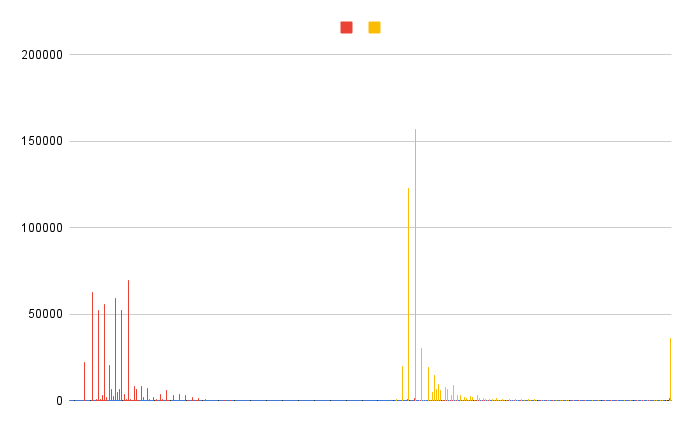

March 30, 2023
Timing Side Channel in Hashicorp Vault Shamir's Secret Sharing
CVE-2023-25000
This article discusses the technicalities of CVE-2023-25000, a timing side-channel vulnerability I discovered in Hashicorp Vault. From the official advisory:
HashiCorp Vault’s implementation of Shamir’s secret sharing used precomputed table lookups, and was vulnerable to cache-timing attacks. An attacker with access to, and the ability to observe a large number of unseal operations on the host through a side channel may reduce the search space of a brute force effort to recover the Shamir shares. This vulnerability, CVE-2023-25000, is fixed in Vault 1.13.1, 1.12.5, and 1.11.9.
Details
Hashicorp Vault stores most of its data in an encrypted form; encryption and decryption are carried out with encryption keys belonging in the keyring, which is stored encrypted with yet another key called the root key. When stored, this latter key is encrypted with a key called the unseal key, as described here. For the server to be into an operational state, it must be unsealed first. The unsealing mechanism is based on an algorithm named Shamir's Secret Sharing, which splits a secret into parts named shares. The secret can only be derived from the combination of enough parts to match a given threshold. Each share is essentially a point $(i, f(i))$ of a polynomial $f(x)=a_0 + a_1 x + a_2 x^2 + ... + a_{k-1} x^k-1$ having its $k-1$ coefficients randomly chosen from a finite field $GF(q)$. In the specific case of Hashicorp's SSS implementation, each byte of the seal key is seen as one secret to split, therefore there is one polynomial over $GF(2^8)$ for each byte of the secret. The shares are recombined with Lagrange interpolation.
$GF(2^8)$ is an extension field, therefore its elements are linear combinations of a polynomial basis. In other words, elements in $GF(2^8)$ are themselves polynomials of degree $8-1$. The canonical way to represent elements of $GF(2^n)$ on a machine is to encode each element with $n$ bits, where bits set to $1$ indicate whether the $n-1\text{nth}$ term is present or not in the polynomial expression. In the case of $GF(2^8)$, this makes for a compact and fast representation, given that each encoded element fits into a single word. One might be tempted to see these 8-bit words as integers but arithmetic operations in the field are not the same as those over $\mathbb{Z}$, and are instead carried out according to polynomial arithmetic: addition (and subtraction) are the bitwise XOR, while multiplication starts with the polynomial multiplication of the two multiplicands and requires the result to be reduced down to its canonical representation by modular reduction against the defining polynomial of the field. As per definition of fields in general, there must also be a (modular) inverse for each element, and these are obtained with the polynomial GCD algorithm.
A property of finite fields is that the whole group can be generated by repeated exponentiation of special elements called generators. The cardinality $\lvert GF(2^8) \rvert=256$ is small enough to allow for the pre-computation of all its elements into logarithmic (and exponentiation) tables, given that $ab=g^{log_g(ab)}=g^{log_g(a)+log_g(b)}$. These tables are implemented with linear arrays so that the access to any element is done via simple array indexing. This results in both multiplication and division to be really fast, which is one of the reasons behind AES's renown fast performances.
Hashicorp Vault defines the tables under shamir/tables.go:
var (
// logTable provides the log(X)/log(g) at each index X
logTable = [256]uint8{
0x00, 0xff, 0xc8, 0x08, 0x91, 0x10, 0xd0, ...
...
expTable = [256]uint8{
0x01, 0xe5, 0x4c, 0xb5, 0xfb, 0x9f, 0xfc, 0x12, ...
As it can be seen from the below code, these are used to perform division and multiplication in $GF(2^8)$:
// div divides two numbers in GF(2^8)
func div(a, b uint8) uint8 {
if b == 0 {
// leaks some timing information but we don't care anyways as this
// should never happen, hence the panic
panic("divide by zero")
}
log_a := logTable[a]
log_b := logTable[b]
diff := ((int(log_a) - int(log_b)) + 255) % 255
ret := int(expTable[diff])
// Ensure we return zero if a is zero but aren't subject to timing attacks
ret = subtle.ConstantTimeSelect(subtle.ConstantTimeByteEq(a, 0), 0, ret)
return uint8(ret)
}
// mult multiplies two numbers in GF(2^8)
func mult(a, b uint8) (out uint8) {
log_a := logTable[a]
log_b := logTable[b]
sum := (int(log_a) + int(log_b)) % 255
ret := int(expTable[sum])
// Ensure we return zero if either a or b are zero but aren't subject to
// timing attacks
ret = subtle.ConstantTimeSelect(subtle.ConstantTimeByteEq(a, 0), 0, ret)
ret = subtle.ConstantTimeSelect(subtle.ConstantTimeByteEq(b, 0), 0, ret)
return uint8(ret)
}
Both functions are used during the Vault server unsealing procedure,
which has to reconstruct the split secret from the shares provided
by each participant, an operation that is implemented in the
shamir.Combine function:
func Combine(parts [][]byte) ([]byte, error) {
...
// Reconstruct each byte
for idx := range secret {
// Set the y value for each sample
for i, part := range parts {
y_samples[i] = part[idx]
}
// Interpolate the polynomial and compute the value at 0
val := interpolatePolynomial(x_samples, y_samples, 0)
// Evaluate the 0th value to get the intercept
secret[idx] = val
}
return secret, nil
}
As one would expect, the Lagrange interpolation which reconstructs the
polynomial, and hence the secret, is done by interpolatePolynomial, which
is where the polynomial arithmetic operations are finally found:
interpolatePolynomial(x_samples, y_samples []uint8, x uint8) uint8 {
limit := len(x_samples)
var result, basis uint8
for i := 0; i < limit; i++ {
basis = 1
for j := 0; j < limit; j++ {
if i == j {
continue
}
num := add(x, x_samples[j])
denom := add(x_samples[i], x_samples[j])
term := div(num, denom)
basis = mult(basis, term)
}
group := mult(y_samples[i], basis)
result = add(result, group)
}
return result
}
The attentive reader may have noticed that both the division and
multiplication functions utilize constant time operations from Golang's
subtle package: were they not present, the unprivileged
Eve in the position to take time measurements at the time when
the secret is reconstructed could infer whether one of the operands is
zero by simply observing that in such case the function returns in a
non-negligible shorter time compared to the other cases. In multitenant
environments this is no longer a theoretical scenario,
as fine-grained timing measurements are possible even across different
virtual machines, due to hardware side channels. This is why those
constant time operations are necessary.
But are branching and comparisons the only parts of the code where one needs to be defensive against the possibility of leaking timing information?
It has long been believed that array indexing and lookups were not vulnerable to timing attacks, for the access time was considered constant. As it turns out, this is not the case: the first claim that "RAM cache hits can produce timing characteristics" was followed-up roughly ten years later by the first practical attack against AES exploiting the fact that software implementations using T-Tables for performance, which are tables built upon those shown above, were leaking time information due to the processor caches.
This is the reason for which the OpenSSL project got rid of their T-Tables AES implementation, and for which the use of lookup tables in cryptography is discouraged. Notably, the attack predates the Flush+Reload technique, which made timing attacks on shared environments even more practical.
By carrying out a few measurements against Hashicorp’s shamir package one can see that the lookups against cached tables (in red) take considerably shorter compared to their RAM counterparts (on the right, in yellow), as one would expect. The cached lookup mean and standard deviation are 54.43 (CPU cycles) and 37, respectively. Whereas the RAM hits have access-time mean and standard deviation 225 (CPU cycles) and 605, respectively:

Given that both tables logTable and expTable are of size 256 bytes,
and that a cache line on a reasonably recent CPU is 64 bytes, each table
can be partitioned into 4 quadrants.
We then use the Flush+Reload technique to probe the cache while performing
repeated invocations of shamir.Combine with random values for the
shares’ bytes: given a binary SSS that we want to probe, when this is run as
a process with its own address space, logTable will be mapped at virtual
address BASE + OFFSET. If we memory-map SSS into the address space of the
probe process, the logTable will then be mapped at virtual address BASE’
+ OFFSET. We cannot know BASE in advance but can retrieve OFFSET from
either the symbol table of the binary or directly from memory. Since we
need to memory-map the binary anyway in order to achieve page-sharing of the same physical
page of the target, we choose the latter method.
(gdb) info proc mappings ... 0x7fffbf635000 0x7fffbf7ff000 0x1ca000 0x0 r--s /home/gco/src/sss/sss ... (gdb) find /b 0x7fffbf635000, 0x7fffbf7ff000, 0x00, 0xff, 0xc8, 0x08, 0x91, 0x10, 0xd0, 0x36 0x7fffbf7514a0 1 pattern found. (gdb) p /x 0x7fffbf7514a0-0x7fffbf635000 $1 = 0x11c4a0 (gdb) p /x 0x11c4a0+64 $2 = 0x11c4e0 (gdb) p /x 0x11c4a0+128 $3 = 0x11c520 (gdb) p /x 0x11c4a0+192 $4 = 0x11c560
Once we know the OFFSET, we can probe BASE’+OFFSET knowing that a cache
hit for BASE+OFFSET will refer to the same object, with the implication that
one does not need to be concerned with ASLR. We hence probe the cache with
a cache-miss threshold of 80 cycles in order to cut down the noise.
Although the arguments of the shamir.Combine function
do not directly translate to the arguments of the mul
and div (as several other operations are involved in the
Lagrange interpolation), we feed the function with random values from
the intervals: [0,64), [64,128), [128,192), [192,256),
and we obtain the following table, which reports the average number of cache
hits for each table offset over repeated runs of 1000 invocations of
shamir.Combine. The number of shares and the size of each share are both 5.
| 0x11c4a0 | 0x11c4e0 | 0x11c520 | 0x11c560 | |
|---|---|---|---|---|
| [0,64) | 40 | 43 | 22 | 13 |
| [64,128) | 30 | 40 | 21 | 10 |
| [128,192) | 26 | 21 | 30 | 23 |
| [192,256) | 27 | 23 | 8 | 15 |
It appears that the first half of logTable is cached more frequently
than the other half. By tracking the argument pairs to mul and div
one observes that the table indexes that fall into the first
half are somehow overrepresented, which may be a good explanation for the phenomenon: over a run of 10000 invocations with
shamir.Combine argument bytes uniformly sampled from [0, 255], we observe
that 1 was used as the index for 206569 lookups, whereas all other
indexes are around the mean 12767, with standard deviation 341. The reason
for this bias seems to be the calculation of the Lagrange basis in the
interpolatePolynomial function:
func interpolatePolynomial(x_samples, y_samples []uint8, x uint8) uint8 {
limit := len(x_samples)
var result, basis uint8
for i := 0; i < limit; i++ {
basis = 1
for j := 0; j < limit; j++ {
...
Indeed, the loop always reinitializes the basis to 1, which explains why
it is the most used index in the lookup tables, resulting in the first
quadrant of the table being cached more often. This could have the same
effect of the infamous n[3] of the AES T-Tables.
With regards to the expTable, the bias discussed above does not
arise. However, with the same technique of probing the cache, one is
able to infer whether the indexes of two consecutive lookups fall into
any of the four partitions, by simply measuring the cycles between two
consecutive cache hits. There are indeed regular consecutive occurrences
of the same index to expTable due to the way the loop is built (the
x_samples are repeated for each y_samples). For example, with $5 \times 256$
shares, every 8 iterations of the main loop of interpolatePolynomial,
the index with which expTable is looked-up is the same across the two
invocations of div and mul, regardless of the value of the bytes of each
share. The period increases with the number of shares. Eve
could therefore decide to spy only one of the four partitions of the
table and wait for two cache hits within the same cache line that are
close enough.
For example, without loss of generality, the shares
[][]byte{
{253,40,124,100,122},
{115,102,253,56,161},
{93,154,84,174,253},
{231,81,12,255,76},
{186,31,8,253,29}}
produce the following pattern of indexes:
137 137 78 4 118 195 38 175 128 136 136 139 89 42 153 197 50 117 79 79 138 92 210 42 89 153 107 119 119 43 110 211 113 86 51 63 39 39 196 153 88 160 87 54 78 137 137 78 4 118 195 38 175 51 136 136 139 89 42 153 197 50 130 79 79 138 92 210 42 89 153 112 119 119 43 110 211 113 86 51 90 39 39 196 153 88 160 87 54 100 137 137 78 4 118 195 38 175 223 136 136 139 89 42 153 197 50 58 79 79 138 92 210 42 89 153 86 119 119 43 110 211 113 86 51 79 39 39 196 153 88 160 87 54 171 137 137 78 4 118 195 38 175 206 136 136 139 89 42 153 197 50 156 79 79 138 92 210 42 89 153 215 119 119 43 110 211 113 86 51 161 39 39 196 153 88 160 87 54 227
Let's assume Eve wants to detect the occurrence of the sequence
137 137. These are all indexes of the third "quadrant", i.e. they belong
in the interval [128; 192). Eve decides then to probe OFFSET+128,
where OFFSET is obtained from the binary object as shown previously. Using
the commodity spy program from the IAIK folks:
gco@ruin:~/src/timing$ ./spy ./sss 0x11c420 Spying on: 0x7f4e9e44a420->5f... 90689878317626: Cache Hit (89 cycles) after a pause of 1743300 cycles 90689878372799: Cache Hit (92 cycles) after a pause of 1 cycles 90689878429213: Cache Hit (92 cycles) after a pause of 4 cycles 90689878588794: Cache Hit (95 cycles) after a pause of 21 cycles 90689878623787: Cache Hit (98 cycles) after a pause of 3 cycles 90689878650226: Cache Hit (92 cycles) after a pause of 2 cycles 90689878682815: Cache Hit (92 cycles) after a pause of 3 cycles 90689878708445: Cache Hit (109 cycles) after a pause of 1 cycles 90689878728245: Cache Hit (116 cycles) after a pause of 1 cycles ...
The invocation of a single shamir.Combine, with the shares above as argument, produces
22 cache hits with a threshold of 150. The shortest distance between two
cache hits we obtain is: $90689878728245-90689878708445=19800$ cpu cycles,
whereas the mean of all distances is 54530 with a large standard deviation
of 39314, which makes it significantly short to indicate the repetition.